Short-term rental management and property maintenance in Marloth Park, on the boundary of the Kruger National Park.
Services
One point of contact for the care of your property in Marloth Park.
Short-term rental management
Online marketing, listings and booking management, guest communication, housekeeping coordination, owner reporting and property inspections.
Property maintenance
Full property maintenance.
Swimming pools and spas
Swimming pool and spa (jacuzzi) servicing and repairs by a fully qualified pool and spa technician.
Water and irrigation
JoJo tank installations and maintenance. Irrigation systems for gardens and lawns.
Garden services
Garden services, including tree felling and lawn laying.
Cleaning and laundry
Full cleaning service, including commercial laundry.
Wood restoration and furniture
Wood restoration and bespoke live-edge wooden furniture.
Any work outside these services is subcontracted to trusted local specialists and managed end to end by Rivers Edge.
Recent Work
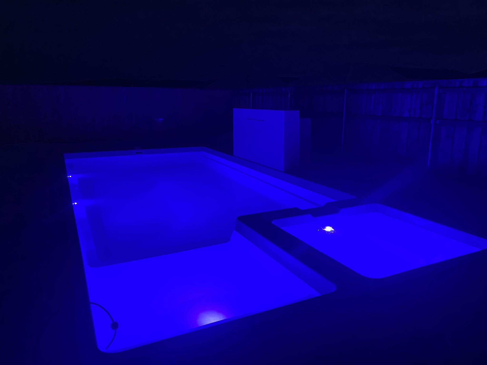
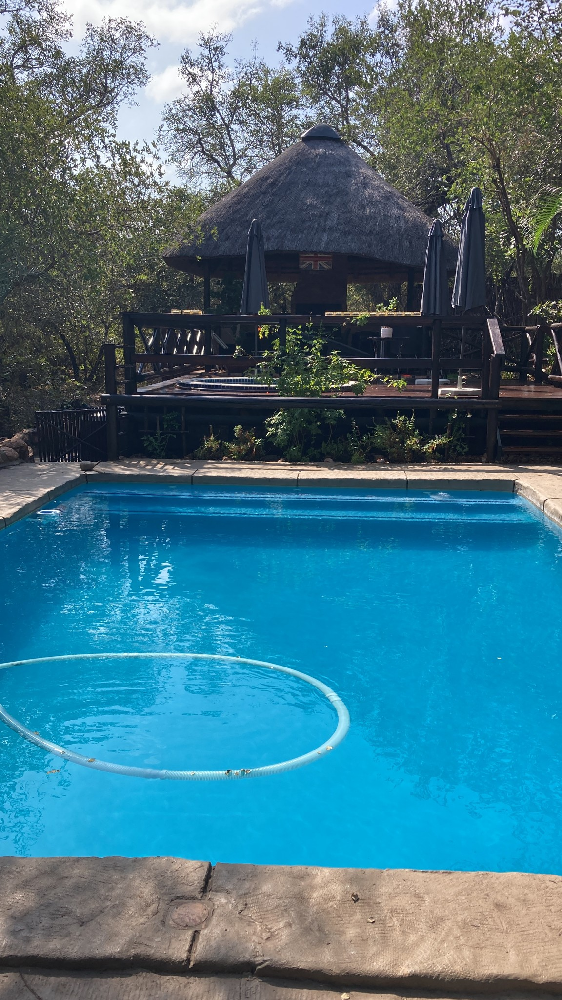
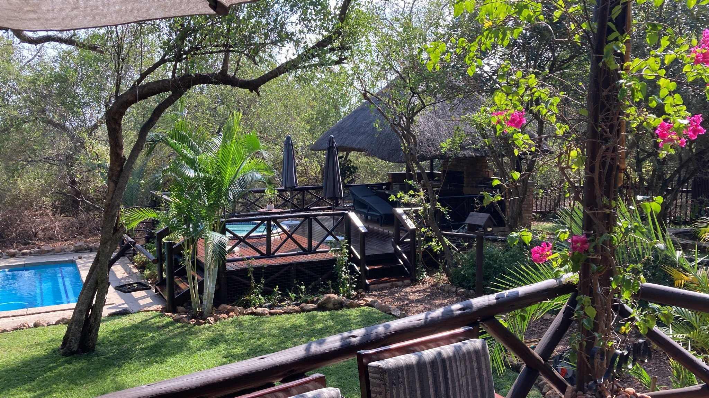
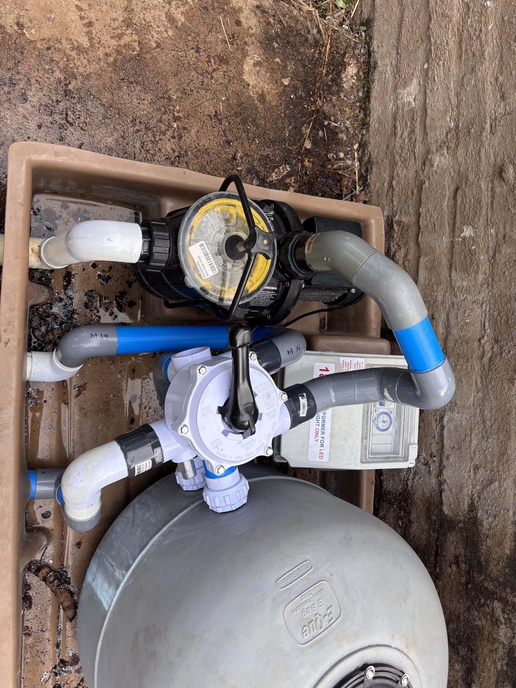
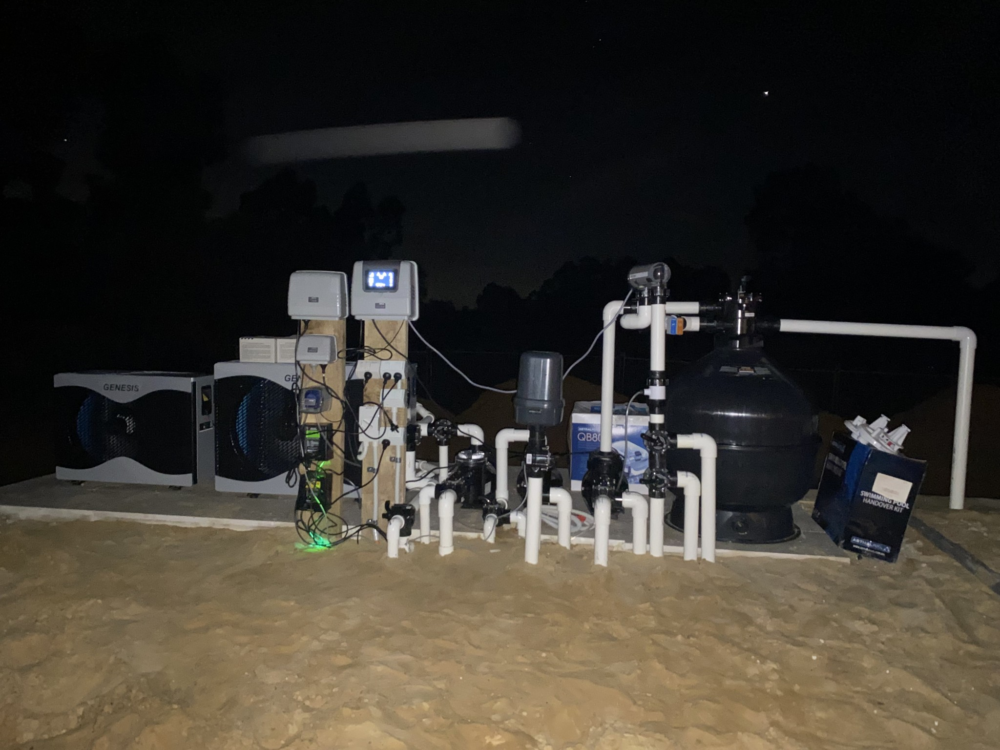
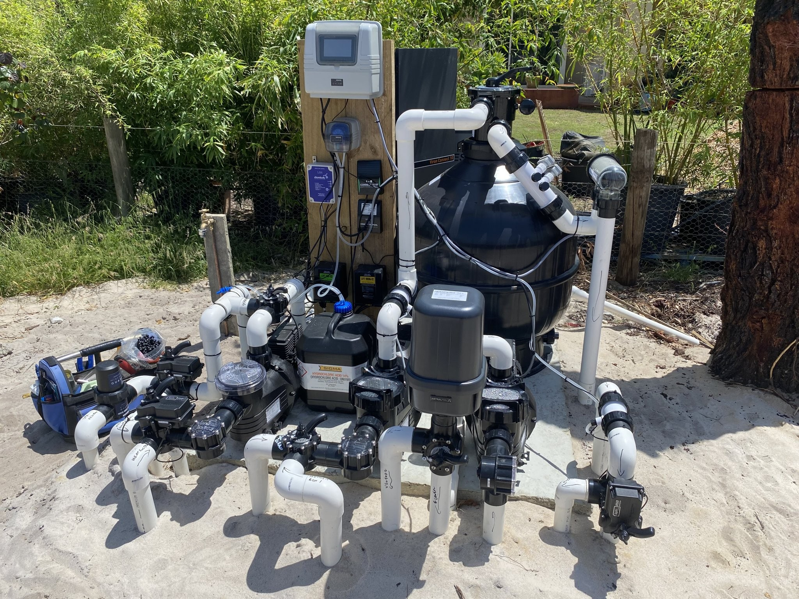
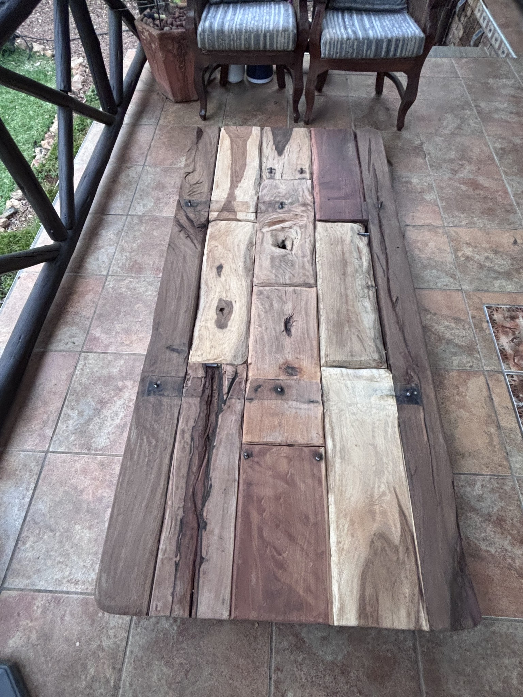

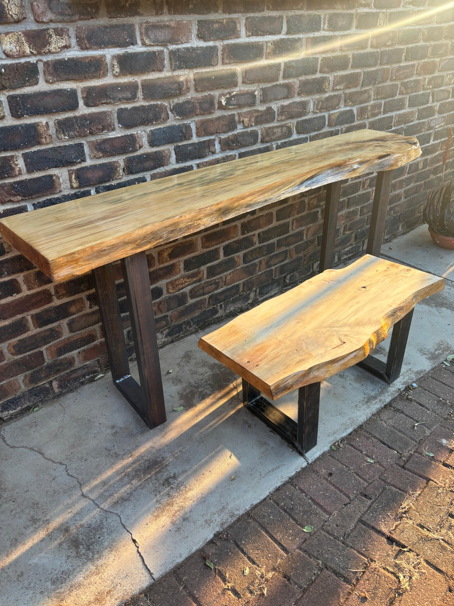
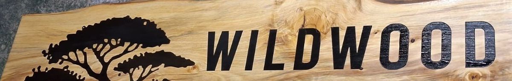
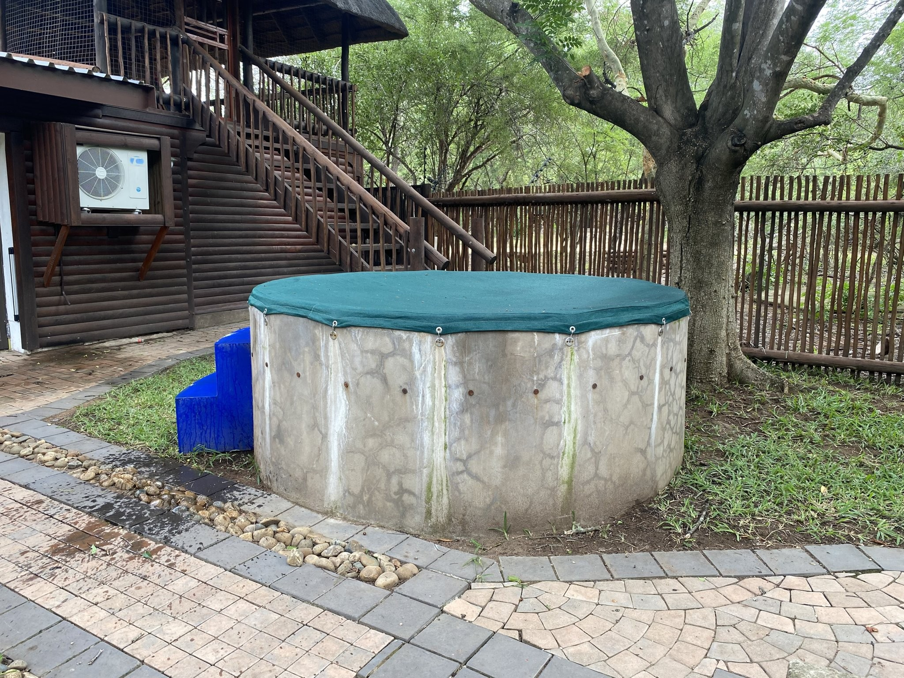
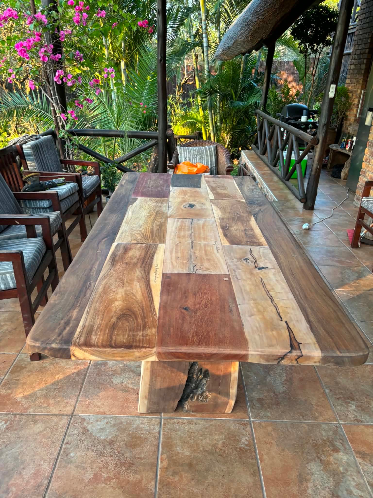
About
Rob Barrett brings over 20 years of experience in international operations and logistics to Rivers Edge, which he now runs full-time in Marloth Park.
He lives and works on the Crocodile River, on the boundary of the Kruger National Park.